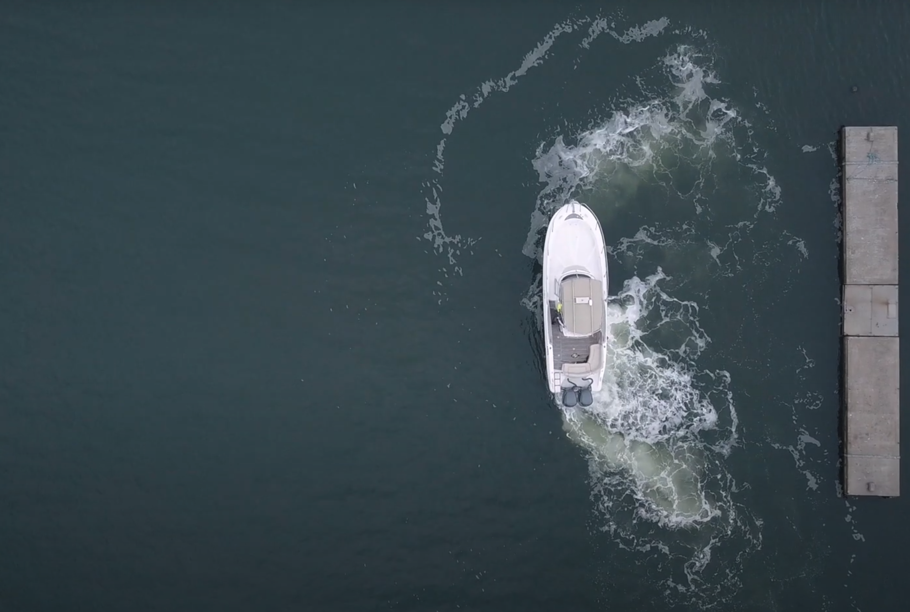
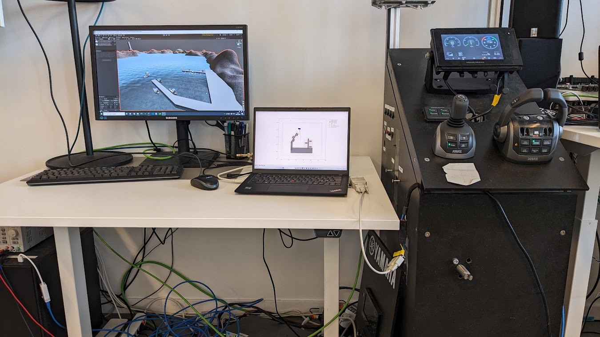

Route planning
The harbour was represented by polygon boundaries and obstacles. A visibility graph and an A*-based search generated a route to the docking area. Obstacle padding accounted for the vessel dimensions.
For my MSc thesis at CPAC Systems, we developed and evaluated an autonomous docking system for a marine vessel using Model Predictive Control. The objective was to generate a route through a constrained harbour, avoid static and moving obstacles, and reach a predefined docking position with the correct orientation.
← Back to projects
The docking task included several related problems that could not be handled by one control function alone. The system needed a route through the harbour, a model of the vessel motion, a controller that could follow the route, collision avoidance and interfaces that allowed the same concept to be tested in several environments.
The work was therefore divided into five main parts.
The harbour was represented by polygon boundaries and obstacles. A visibility graph and an A*-based search generated a route to the docking area. Obstacle padding accounted for the vessel dimensions.
A three-degree-of-freedom kinematic model described position and heading, with surge, sway and yaw rate as controller inputs.
The MPC predicted the vessel motion over a finite horizon and selected control actions by minimising costs for route tracking, final pose, control effort and acceleration.
Static obstacles and harbour boundaries were included in the optimisation. Moving obstacles were represented separately so that the trajectory could adapt when the environment changed.
The controller was first tested in Python, then connected to CPAC's Unity-based simulator over CAN, and finally evaluated on a real vessel.
My main focus was the Python simulation environment and the controller, particularly the MPC cost functions. My thesis partner focused more on the vessel model, while path planning and system integration were developed with some overlap between us.
I also worked on the interface to CPAC's simulator. This included receiving vessel state data over CAN, converting between geographic and Cartesian coordinate systems, and translating the controller output into setpoints used by the simulator.

The development process increased the level of realism in three steps. The controller was first evaluated in a Python environment, then connected to CPAC's simulator, and finally tested on a real vessel.
The real-world test was limited to one afternoon and focused on verifying that the MPC could work with the vessel's proportional control system. It did not include a complete autonomous docking scenario. The test showed that the path and trajectory planners generated suitable references, but the rotational commands were too aggressive and caused heading overshoot. This indicated a need for stricter velocity constraints, stronger acceleration penalties and further tuning.
The simulations showed that the system could follow a reference route, avoid static and moving obstacles and reach docking positions in constrained environments. Differences between the Python simulation, CPAC's simulator and the real vessel also identified areas that require further development before the system can be used reliably in more complex maritime conditions.
The thesis resulted in a granted patent for MPC-based autonomous marine docking. CPAC also continued with the concept of using MPC and the cost-function approach in later autonomous docking development.